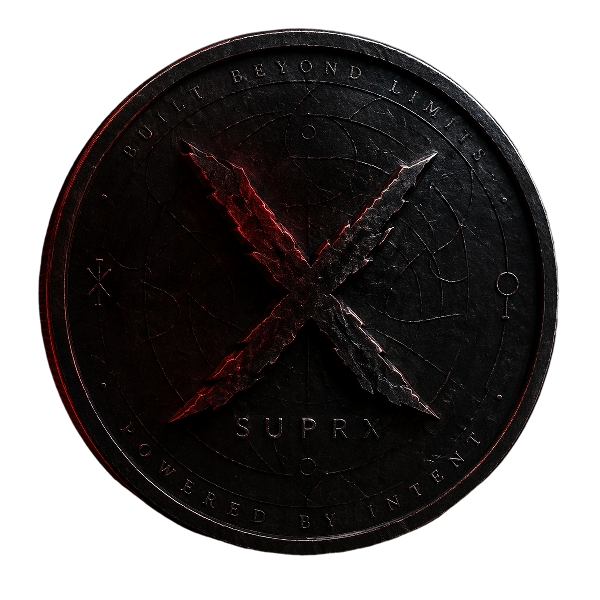

suprx-win64.zip

SUPRX Wallet Downloads
Public Windows and Linux releases.
This page is for real users. It points to the current SUPRX wallet downloads, shows the checksums, and keeps the public release surface clean.
03d7f7c81a1d60c85724cc7615ad7fa52033eaedbe9434b28db9297257df6c3f
suprx-linux-x86_64-v1.0.7.tar.gz
e4daffef75a7bd9a47fa8588b86b0ce1208ad2496d46ff980d6b84b1e154eed4
What is inside
Windows ZIP
- suprx-qt.exe for the desktop wallet UI
- suprxd.exe for the node daemon
- suprx-cli.exe, suprx-wallet.exe, suprx-tx.exe, and suprx-util.exe for command-line and wallet tools
- vc_redist.x64.exe for the Microsoft runtime if the machine needs it
- export_mobile_recovery_easy.bat for future wallet migration support
Linux archive
- bin/suprx
- bin/suprxd
- bin/suprx-cli
- bin/suprx-wallet
- bin/suprx-tx
- bin/suprx-util
Quick start
Windows
- Download
suprx-win64.zip. - Unzip it into a normal folder.
- Run
vc_redist.x64.exeif Windows reports missing runtime files. - Open
suprx-qt.exe. - Let the wallet sync before trusting balances.
Linux
- Download
suprx-linux-x86_64-v1.0.7.tar.gz. - Extract it with
tar -xzf suprx-linux-x86_64-v1.0.7.tar.gz. - Run
./bin/suprxdor./bin/suprx. - Let the wallet sync before trusting balances.
Verify the downloads
Do this before you move funds into a new machine.
Windows
Get-FileHash .\suprx-win64.zip -Algorithm SHA256
03d7f7c81a1d60c85724cc7615ad7fa52033eaedbe9434b28db9297257df6c3f
Linux
sha256sum suprx-linux-x86_64-v1.0.7.tar.gz
e4daffef75a7bd9a47fa8588b86b0ce1208ad2496d46ff980d6b84b1e154eed4
SHA256SUMS.txt and SHA256SUMS-linux.txt are the public checksum files for this repo.
Safety
- This publish repo should contain only public release files.
- It should never include
wallet.dat, private keys, mobile recovery exports, or.envfiles. - Anyone who gets private recovery exports can take the coins.